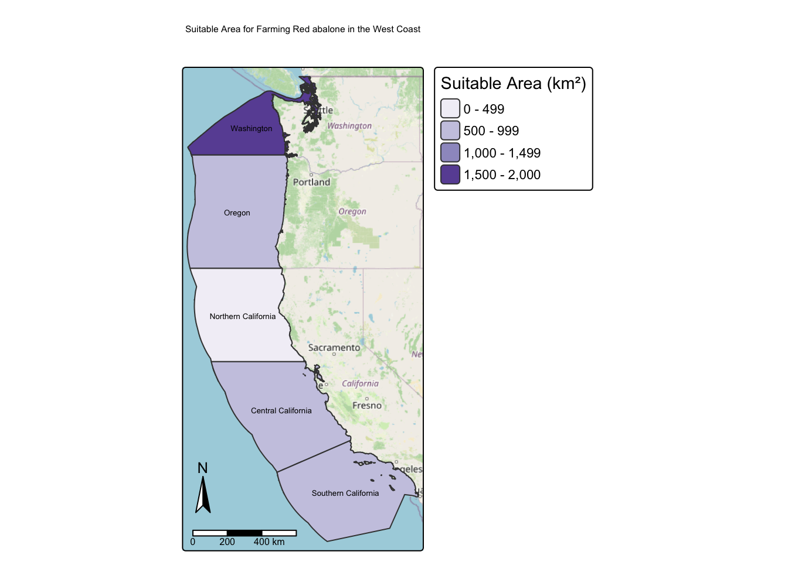

# Load in libraries
suppressPackageStartupMessages({
library(terra)
library(sf)
library(tmap)
library(dplyr)
library(kableExtra)})Aquaculture Analysis
Prepare data
To start, we need to load all necessary data and make sure it has the coordinate reference system.
shapefile for the West Coast EEZ bathymetry raster SST rasters combine SST rasters into a raster stack
# Read in data
ocean_depth <- rast(here::here("data", "depth.tif"))
economic_zones <- st_read(here::here("data", "wc_regions_clean.shp"), quiet = TRUE)
temp_2008 <- rast(here::here("data", "average_annual_sst_2008.tif"))
temp_2009 <- rast(here::here("data", "average_annual_sst_2009.tif"))
temp_2010 <- rast(here::here("data", "average_annual_sst_2010.tif"))
temp_2011 <- rast(here::here("data", "average_annual_sst_2011.tif"))
temp_2012 <- rast(here::here("data", "average_annual_sst_2012.tif"))# Put all data into a list to check CRS
all_crs <- list(temp_2008, temp_2009, temp_2010, temp_2011, temp_2012, ocean_depth, economic_zones)
# Check if CRSs match
if (all(sapply(all_crs, crs) == crs(economic_zones))) {
message("🟢 CRSs match")
} else {
warning("❗ CRSs don't match!")
}Warning: ❗ CRSs don't match!# Match all CRSs to economic_zones CRS
ocean_depth <- project(ocean_depth, economic_zones)
temp_2008 <- project(temp_2008, economic_zones)
temp_2009 <- project(temp_2009, economic_zones)
temp_2010 <- project(temp_2010, economic_zones)
temp_2011 <- project(temp_2011, economic_zones)
temp_2012 <- project(temp_2012, economic_zones)
# Put all data into a list to check CRS
all_crs <- list(temp_2008, temp_2009, temp_2010, temp_2011, temp_2012, ocean_depth, economic_zones)
# Check if CRSs match
if (all(sapply(all_crs, crs) == crs(economic_zones))) {
message("🟢 CRSs match")
} else {
warning("❗ CRSs don't match!")
}🟢 CRSs matchProcess data
Next, we need to process the SST and depth data so that they can be combined. In this case the SST and depth data have slightly different resolutions, extents, and positions.
find the mean SST from 2008-2012 (e.g. create single raster of average SST) convert average SST from Kelvin to Celsius hint: subtract by 273.15 crop depth raster to match the extent of the SST raster note: the resolutions of the SST and depth data do not match resample the depth data to match the resolution of the SST data using the nearest neighbor approach check that the depth and SST match in resolution, extent, and coordinate reference system hint: can the rasters be stacked?
find the mean SST from 2008-2012 (e.g. create single raster of average SST)
convert average SST from Kelvin to Celsius hint: subtract by 273.15
# Stack rasters to find the mean SST from 2008-2012
temp_stack <- c(temp_2008, temp_2009, temp_2010, temp_2011, temp_2012)
# Calculate mean of stacked raster
mean_sst <- mean(temp_stack)
# Convert mean_sst from units to Celsius from Kelvin
mean_sst_c <- mean_sst - 273.15crop depth raster to match the extent of the SST raster
# Crop ocean_depth raster to match the extent of mean_sst_c
ocean_depth_cropped <- crop(ocean_depth, mean_sst_c)###note: the resolutions of the SST and depth data do not match ###resample the depth data to match the resolution of the SST data using the nearest neighbor approach
# Resample ocean_depth_cropped to match the resolution of mean_sst_c
ocean_depth_resampled <- resample(ocean_depth_cropped, mean_sst_c, method = "near")###check that the depth and SST match in resolution, extent, and coordinate reference system ###hint: can the rasters be stacked?
# Check that the ocean_depth_resampled and mean_sst_c resolution, extent, and CRS match
crs(ocean_depth_resampled) == crs(mean_sst_c)[1] TRUEext(ocean_depth_resampled) == ext(mean_sst_c)[1] TRUEres(ocean_depth_resampled) == res(mean_sst_c)[1] TRUE TRUE# Stack the rasters
depth_sst_stack <- c(ocean_depth_resampled, mean_sst_c)Find suitable locations
To find suitable locations for marine aquaculture, we’ll need to find locations that are suitable in terms of both SST and depth.
reclassify SST and depth data into locations that are suitable for oysters hint: set suitable values to 1 and unsuitable values to 0 find locations that satisfy both SST and depth conditions
Research has shown that oysters need the following conditions for optimal growth:
sea surface temperature: 11-30°C depth: 0-70 meters below sea level
# Reclasify mean_sst_c and ocean_depth_resampled into locations that are suitable for oysters
# Make the suitible range from 11-30°C
mean_sst_suitable <- classify(mean_sst_c, rbind(c(-Inf, 11, 0), # below 11°C = 0
c(11, 30, 1), # suitable (11-30) = 1
c(30, Inf, 0))) # above 30°C = 0
# Make the suitible range from -70 to 0 meters below sea level
ocean_depth_suitable <- classify(ocean_depth_resampled, rbind(c(-Inf, -70, 0), # below -70m = 0
c(-70, 0, 1), # suitable (-70-0) = 1
c(0, Inf, 0))) # above 0 = 0Determine the most suitable EEZ
We want to determine the total suitable area within each EEZ in order to rank zones by priority. To do so, we need to find the total area of suitable locations within each EEZ.
select suitable cells within West Coast EEZs find area of grid cells find the total suitable area within each EEZ hint: it might be helpful to rasterize the EEZ data
select suitable cells within West Coast EEZs
# Find sutible cells in both layers
suitable_cells <- mean_sst_suitable * ocean_depth_suitable
# Only keep areas inside the economic_zones polygon
economic_zones_mask <- mask(suitable_cells, vect(economic_zones)) # Convert economic_zones to a vector
# Find area of grid cells
cell_areas <- cellSize(economic_zones_mask, unit = "km")
# Multiply economic_zones_mask by cell_areas to get the suitable cells area
suitable_area <- economic_zones_mask * cell_areas
# # Add up the suitable area inside each EEZ polygon
# to get total potential aquaculture area per zone
potential_aquaculture_area <- zonal(suitable_area, vect(economic_zones), fun = "sum", na.rm = TRUE)# Add the potential_aquaculture_area data to economic_zones to plot it
economic_zones$potential_aquaculture_area <- potential_aquaculture_area$mean
# Create a map of the economic_zones regions colored by amount of suitable area
tm_shape(economic_zones) +
tm_polygons(
fill = "potential_aquaculture_area",
fill.scale = tm_scale(values = "brewer.purples"),
fill.legend = tm_legend(title = "Suitable Area (km²)")
) +
tm_text("rgn", size = 0.42, col = "black") + # add region names
tm_title("suitable Area for Farming Oysters in the West Coast") +
tm_basemap("OpenStreetMap") + # add basemap
tm_scalebar(position = c(0.01, 0.06)) +
tm_compass(position = c(0.01, 0.2)) +
tm_layout(legend.outside = TRUE)# Display the potential_aquaculture_area in each EEZ as a kable
economic_zones %>%
select(rgn, potential_aquaculture_area) %>%
st_drop_geometry() %>% # remove geometry column
rename(
Region = rgn,
`Potential Aquaculture Area` = potential_aquaculture_area
) %>%
kable(
caption = "Potential Marine Aquaculture Area by EEZ (km²)",
digits = 2
) %>%
kable_styling(
bootstrap_options = c("striped", "hover", "condensed"),
full_width = FALSE
)| Region | Potential Aquaculture Area |
|---|---|
| Oregon | 1074.26 |
| Northern California | 178.02 |
| Central California | 4069.57 |
| Southern California | 3508.19 |
| Washington | 2378.28 |
suitable_eez <- function(min_depth, max_depth, min_sst, max_sst, species_name) {
library(terra)
library(sf)
library(tmap)
library(dplyr)
library(kableExtra)
# Read in data
ocean_depth <- rast(here::here("data", "depth.tif"))
economic_zones <- st_read(here::here("data", "wc_regions_clean.shp"), quiet = TRUE)
temp_2008 <- rast(here::here("data", "average_annual_sst_2008.tif"))
temp_2009 <- rast(here::here("data", "average_annual_sst_2009.tif"))
temp_2010 <- rast(here::here("data", "average_annual_sst_2010.tif"))
temp_2011 <- rast(here::here("data", "average_annual_sst_2011.tif"))
temp_2012 <- rast(here::here("data", "average_annual_sst_2012.tif"))
# Match all CRSs to economic_zones CRS
ocean_depth <- project(ocean_depth, economic_zones)
temp_2008 <- project(temp_2008, economic_zones)
temp_2009 <- project(temp_2009, economic_zones)
temp_2010 <- project(temp_2010, economic_zones)
temp_2011 <- project(temp_2011, economic_zones)
temp_2012 <- project(temp_2012, economic_zones)
# Put all data into a list to check CRS
all_crs <- list(temp_2008, temp_2009, temp_2010, temp_2011, temp_2012, ocean_depth, economic_zones)
# Check if CRSs match
if (all(sapply(all_crs, crs) == crs(economic_zones))) {
message("🟢 CRSs match")
} else {
warning("❗ CRSs don't match!")
}
# Stack rasters to find the mean SST from 2008-2012
temp_stack <- c(temp_2008, temp_2009, temp_2010, temp_2011, temp_2012)
# Calculate mean of stacked raster
mean_sst <- mean(temp_stack)
# Convert mean_sst from units to Celsius from Kelvin
mean_sst_c <- mean_sst - 273.15
# Crop ocean_depth raster to match the extent of mean_sst_c
ocean_depth_cropped <- crop(ocean_depth, mean_sst_c)
# Stack the rasters
depth_sst_stack <- c(ocean_depth_resampled, mean_sst_c)
# Make the suitible range from 11-30°C
mean_sst_suitable <- classify(mean_sst_c, rbind(c(-Inf, min_sst, 0), # below 11°C = 0
c(min_sst, max_sst, 1), # suitable (11-30) = 1
c(max_sst, Inf, 0))) # above 30°C = 0
# Make the suitible range from -70 to 0 meters below sea level
ocean_depth_suitable <- classify(ocean_depth_resampled, rbind(c(-Inf, min_depth, 0), # below -70m = 0
c(min_depth, max_depth, 1), # suitable (-70-0) = 1
c(max_depth, Inf, 0))) # above 0 = 0
# Find sutible cells in both layers
suitable_cells <- mean_sst_suitable * ocean_depth_suitable
# Only keep areas inside the economic_zones polygon
economic_zones_mask <- mask(suitable_cells, vect(economic_zones)) # Convert economic_zones to a vector
# Find area of grid cells
cell_areas <- cellSize(economic_zones_mask, unit = "km")
# Multiply economic_zones_mask by cell_areas to get the suitable cells area
suitable_area <- economic_zones_mask * cell_areas
# Add up the suitable area inside each EEZ polygon
potential_aquaculture_area <- zonal(suitable_area, vect(economic_zones), fun = "sum", na.rm = TRUE)
# Add the potential_aquaculture_area data to economic_zones to plot it
economic_zones$potential_aquaculture_area <- potential_aquaculture_area$mean
# Create a map of the economic_zones regions colored by amount of suitable area
eez_plot <- tm_shape(economic_zones) +
tm_polygons(
fill = "potential_aquaculture_area",
fill.scale = tm_scale(values = "brewer.purples"),
fill.legend = tm_legend(title = "Suitable Area (km²)")
) +
tm_text("rgn", size = 0.42, col = "black") + # add region names
tm_title(paste("Suitable Area for Farming", species_name, "in the West Coast")) +
tm_basemap("OpenStreetMap") + # add basemap
tm_scalebar(position = c(0.01, 0.06)) +
tm_compass(position = c(0.01, 0.2)) +
tm_layout(legend.outside = TRUE)
return(eez_plot)
}Red abalone Research has shown that oysters need the following conditions for optimal growth:
sea surface temperature: 8°C - 18°C depth: 0 - 24 m meters below sea level
suitable_eez(min_depth = -24, max_depth = 0, min_sst = 8, max_sst = 18, species_name = "Red abalone")